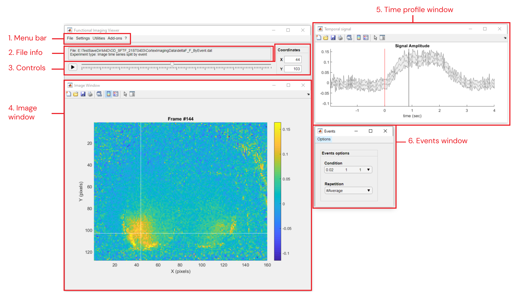
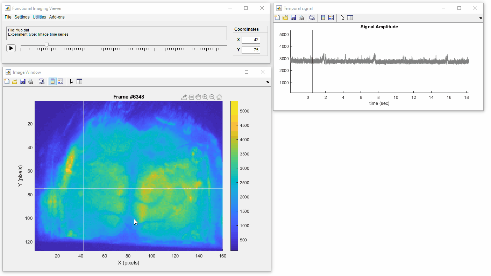
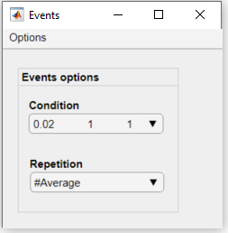

DataViewer
DataViewer is a graphical interface to visualize functional imaging recordings. The app provides basic tools to explore distinct types of recordings such as image time series, event-triggered time series and correlation maps. DataViewer can be called from the visualization tab of the umIToolbox app or as standalone.
The app opens the following data (dimension names):
- Image time series (Y,X,T)
- Event-triggered image time series (E,Y,X,T)
- Single frames (Y,X)
- Seed-pixel correlation maps (Y,X,S)
Syntax
DataViewer(): Opens the main GUI.
DataViewer('C:/PATH/datFile.dat'): Opens the app with the imaging data from datFile.dat. The .dat file created by one of the analysis functions of umIT.
The interface
The main components of the graphical interface are: a main window, containing file and data control options, an image window and a temporal signal window (if the time dimension exists).

Main components of the DataViewer app
- File >>
- Open: Opens dialog to load previously saved .DAT files
- Import Raw data >>
- from LabeoTech system: Import raw data from LabeoTech Imaging Systems. Read the documentation of run_ImagesClassification function for details
- from TIFF: Import raw data from .TIFF files. Read the documentation of importFromTif function for details
- Export images: Opens dialog to export Image and temporal signal windows (PNG (default), JPEG, PDF or EPS formats)
- Export movie: Opens dialog to export Image and temporal signal windows as a movie (.AVI (default) or .MP4)
- Save as...: Open dialog to save current data into a .DAT file
- Settings >>
- Image Options: Opens dialog to set image colormap and clipping values
- Playback speed: Sets movie speed for playback button (3. Controls). If the selected speed is too high, the app will reduce it to avoid lag
- Utilities >>
- Data processing: (Standalone only) Tool to setup image processing pipeline on the data using the analysis functions from the toolbox
- View Data History: Opens a table showing information about the analysis functions run for the opened data file
- ROI options (Standalone only) >>
- Extract data from ROI: Tool to create a .mat file containing data from the displayed ROIs. Read the documentation of the getDataFromROI function for details
- Generate correlation matrix: Tool to create a .mat file containing a correlation matrix from the displayed ROIs. Read the documentation of the genCorrelationMatrix function for details
- Add-ons >>
2. File info
Displays the current file path and the experiment type.
3. Controls
The main window has some control options for image time series:
- Slider: interactive selection of frames
- Play button: plays a movie
- Coordinates: Sets the X,Y coordinates of the crosshair in the Image window
4. Image window
Click on the image to select a pixel. For image time series, the signal amplitude of the selected pixel will be updated in the temporal profile figure.
Use the figure's Data Tips button( ) to add data tips with information about the selected pixel.
) to add data tips with information about the selected pixel.

5. Time profile window
This window will be visible only for data containing Time dimension. Double-click over the plotted line to shift the current frame to the point in time.
As for the Image Window, use the figure's Data Tips button to add data tips showing the signal amplitude and time delay values.
6. Events window
This window will be visible only for data containing Events. Use this window to change the currently displayed condition/repetition or to edit the events list.

Events window
- Events Options panel
- Condition: select the condition to be displayed
- Repetition: select the repetition or the #Average of the current condition
- Options menu
- Delete current... : Deletes the current condition or repetition from the file's .mat meta data file.
- Condition: deletes the current condition
- Repetition: deletes the current repetition
-
Restore all: restores the condition and repetition to the original lists.